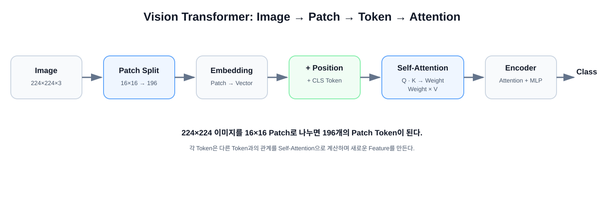
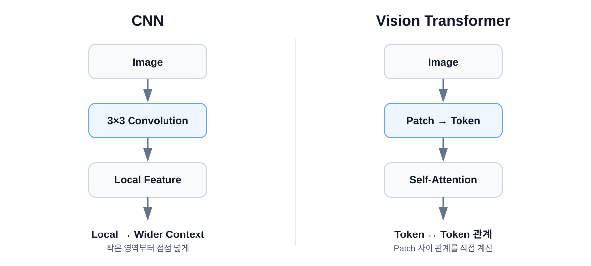

Lecture 03
Vision Transformer를 처음부터 이해하기
Transformer를 이미 안다는 가정 없이 Patch, Token, Embedding, Q/K/V, Self-Attention 순서로 따라갑니다.

1. 이미지를 Patch로 나눈다
224 × 224 image
↓ 16 × 16 patch
14 × 14 patches
↓
196 patches
Patch
이미지를 일정한 크기의 작은 정사각형 조각으로 나눈 단위입니다.
2. Patch를 Token으로 바꾼다
16×16 RGB Patch에는 16×16×3 = 768개의 숫자가 있습니다.
16 × 16 × 3 Patch
↓
Flatten / Linear Projection
↓
Embedding Vector
↓
Transformer Token
Token
Transformer가 처리하는 기본 단위입니다. ViT에서는 각 Patch의 숫자 표현이 Token 역할을 합니다.
Embedding
Patch를 일정 길이의 Vector로 표현한 것입니다. 원래 RGB 숫자를 그대로 쓰는 것이 아니라 학습 가능한 표현으로 바꿉니다.
3. Position Embedding
Transformer는 Token 목록만 받으면 원래 Patch가 이미지의 어느 위치에 있었는지 자동으로 알지 못합니다. 그래서 위치 정보를 별도의 Vector로 더합니다.
4. Q, K, V
각 Token에서 세 종류의 학습된 Vector를 만듭니다.
| 용어 | 쉬운 질문 | 실제 역할 |
|---|---|---|
| Query | 나는 어떤 정보를 찾고 있나? | 다른 Key와 비교되는 Vector |
| Key | 나는 어떤 정보를 가지고 있나? | Query와 관련도를 계산하는 Vector |
| Value | 내가 전달할 정보는 무엇인가? | Attention Weight로 가중합되는 정보 |
5. Self-Attention
Query와 모든 Key 비교
↓
Score
↓
softmax
↓
Attention Weight
↓
Value들의 가중합
↓
새로운 Token Feature
예를 들어 Token A가 C와 가장 관련이 높다고 판단하면 C의 Value를 더 크게 반영합니다. 모든 Token이 이 과정을 수행하면서 서로의 정보를 교환합니다.
6. Attention 공식
Attention(Q, K, V)
= softmax(QKᵀ / √dₖ) V
처음에는 수식을 외우기보다 비교 → Weight → Value 가중합 세 단계만 정확히 이해하면 충분합니다.
7. Multi-Head Attention
Attention을 한 번만 수행하지 않고 여러 개 Head에서 서로 다른 Q/K/V Projection을 사용합니다. 각 Head는 서로 다른 관계를 학습할 기회를 얻습니다.
8. CNN과 ViT

| 관점 | CNN | ViT |
|---|---|---|
| 기본 단위 | Feature Map | Token |
| 핵심 연산 | Convolution | Self-Attention |
| 초기 관계 | Local | Token 간 관계 |
| 위치 정보 | 공간 구조에 자연스럽게 포함 | Position 정보 필요 |
ViT 한 문장: 이미지를 Patch Token으로 바꾸고,
Self-Attention을 통해 각 Patch 사이의 관계를 학습하는 모델.
처음 공부할 때 기억할 7개 단어
Patch
↓
Token
↓
Embedding
↓
Position
↓
Q / K / V
↓
Self-Attention
↓
Transformer Encoder